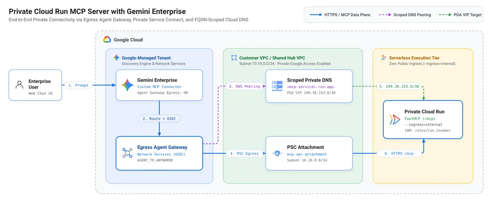
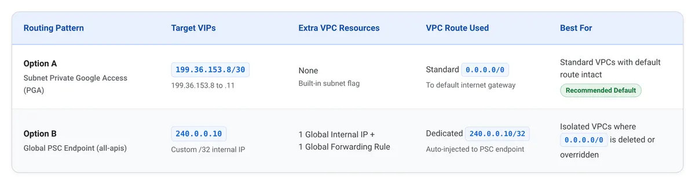

雙跳私有路徑：內部 MCP 安全接進 Gemini Enterprise
導讀原文：How to securely connect internal Cloud Run MCP servers to Gemini Enterprise（Google Developers Blog 實作教學；含可執行範例與部署腳本）
內部 MCP 要擋掉公網、要驗兩個身分、又不能動到共用 VPC 的 DNS；原文把三個症狀與三個對應機制一次講完。
原型進生產，三個看得到的錯誤
原文先講為什麼放 Cloud Run：StreamableHTTP 這類輕量 MCP 伺服器在 Cloud Run 上自動擴充、TLS 憑證由平台處理、與 Cloud IAM 原生整合。
從原型搬進生產，撞到的是三個具體症狀，不是抽象的資安顧慮。
| 難題 | 症狀（原文限定語） | 對應機制 |
|---|---|---|
| 只收私有網路流量 | 開 internal ingress 後，Gemini Enterprise 的預設公開呼叫在 Google 邊緣被拒，回 HTTP 404 | Egress Agent Gateway＋PSC Network Attachment |
| 服務與使用者雙重驗證 | 每次工具呼叫要有兩個獨立檢查：請求來自我授權的實例、以及簽入使用者的 OAuth 2.0 token | Cloud Run IAM＋應用層 OAuth 2.0 中介層 |
| 共用 VPC 不能撞 DNS | 覆寫整個 *.run.app 網域會劫持 DNS，讓同一網路其他 Cloud Run 服務路由壞掉 | FQDN 限定的私有 Cloud DNS 區 |
第三列是大企業才有的痛：原文說常見規模是數百個 Cloud Run 服務共用一個 Hub VPC，為一支 MCP 覆寫整個網域會連累別人。
（編輯觀點：404 與 502 就是診斷線——一個是請求到不了服務、在 Google 邊緣被拒，一個是封包被解析到公網位址、在 VPC 內出不去而逾時。）
兩跳，加一次限定範圍的 DNS

Gemini Enterprise 跑在 Google 代管的租戶專案，要接內部 Cloud Run，得過兩跳網路與一次限定範圍的 DNS 查詢。
這個前提決定了架構形狀：代管租戶專案與你的 VPC 之間沒有天然的網路交集，所以只能靠兩跳把封包送進來。
第一跳進你的 VPC：區域性的 Egress Agent Gateway 以 Agent-to-Anywhere 模式，接上區域子網（us-central1 或 europe-west1）的 PSC Network Attachment。
這等於在 VPC 內放一個受管網路介面，沒有公開 IP，也不必開任何入站防火牆規則。
第二跳從 VPC 到無伺服器 Cloud Run：封包要私下抵達 Google 的 serverless 前端，Cloud Run 才認得出來源 VPC、符合 internal ingress。
這一跳是分支：標準 VPC 走 Option A 子網 Private Google Access（199.36.153.8/30），不新增任何 VPC 端點，原文標為建議預設。
分支另一邊是 Option B 全域 PSC 端點（240.0.0.10），指向 Google 內建的 all-apis 組合，Cloud Run 端不必掛負載平衡器或 service attachment。
差別在路由：Option B 由 Google Cloud 自動注入一條 /32 內部路由，連 0.0.0.0/0 預設路由被刪掉的封閉 VPC 也通。

DNS 是第三件事，也是 HTTP 502 的來源：Gateway 收到工具呼叫後，先把主機名解析一次，再把封包丟進 VPC。
沒有私有 DNS，.run.app 解析到公網 IP，而 PSC Network Attachment 不出公網，結果就是逾時。
解法不是建 *.run.app 萬用字元區，而是只為這支 MCP 的完整 FQDN 建私有區，並且只把該網域 peering 給 Agent Gateway。
Cloud DNS 採最長後綴比對，共用 VPC 裡其他 Cloud Run 服務照原樣解析；Gateway 連私有 VIP 時仍把服務主機名留在 TLS SNI 與 HTTP Host，Cloud Run 才路由到正確容器。
兩個標頭，兩層身分
身分拆成兩層，關鍵是兩個標頭各走各的、互不覆蓋。
| 層 | 標頭 | 內容 | 誰驗、之後如何 |
|---|---|---|---|
| 基礎設施 | X-Serverless-Authorization | 專案 Gemini Enterprise 服務代理的 Google 簽發 OIDC ID token | Cloud Run IAM 在 serverless 邊緣對 Invoker 角色驗證，進容器前剝掉此標頭 |
| 應用 | Authorization: Bearer | 簽入使用者本人的 OAuth 2.0 access token，原樣不動 | MCP 伺服器內的中介層驗身分、執行逐使用者權限 |
原文附的 Python 中介層只做兩件事：/health 直接放行；其餘請求在 REQUIRE_OAUTH 開啟時，缺 token 或 token 無效一律回 401。
兩種 401 的訊息不同：一種講 token 無效或過期，一種講缺 Bearer 標頭，除錯時先分清楚是哪一種。
這個切法把「請求是不是我授權的實例發的」與「是哪個人發的」分開問，前者在邊緣解決，後者留給應用自己判。
五步接線與驗收
原文的 repo 有可跑的 StreamableHTTP MCP 伺服器、Dockerfile 與設定腳本，部署拆成五步。
前三步是基礎設施：Cloud Run 開 internal-only 與 IAM 驗證，Invoker 只給 Gemini Enterprise 服務代理。
接著建 VPC、PSC Network Attachment 與 Egress Agent Gateway，並套用 outbound 授權政策；再建 FQDN 限定的私有區、對 Gateway 設 DNS peering。
後兩步是接線與驗收：主控台 Security Configuration 綁定 Gateway，註冊 Custom MCP Server 資料存放區（端點加 OAuth 2.0 用戶端憑證），開啟 egress 與 Actions 模式。
驗收在 Cloud Logging：工具初始化、探索、執行三種呼叫都要看到經 Egress Agent Gateway 私有送達，兩道身分檢查都通過。
原文的參考實作在公開 repo：含本地冒煙測試、涵蓋 Option A／B 的兩套路由腳本（含 Shared VPC IAM 綁定與 Cloud Logging 驗證），可先在自己的專案跑一遍再上生產。
帶走三件事
症狀就是診斷。404 是 ingress 擋在邊緣，502 是 DNS 把封包送去公網。
DNS 只改一個名字。萬用字元區在共用 VPC 是別人的事故。
兩道身分都不能省。IAM 驗服務、OAuth 驗人（範例可用 REQUIRE_OAUTH 關掉）。
同一主題的其他館藏
導讀為本站編輯內容（AI 摘解自原文與館藏重點，非官方文件）；位址、錯誤碼與限定語出自原文。兩張架構／選項圖為原文圖（Google Developers），三個難題與兩個標頭的對照表為編輯整理（本站重繪）。原文未提供延遲或吞吐數據。內容經對照原文的獨立事實審查後發布。